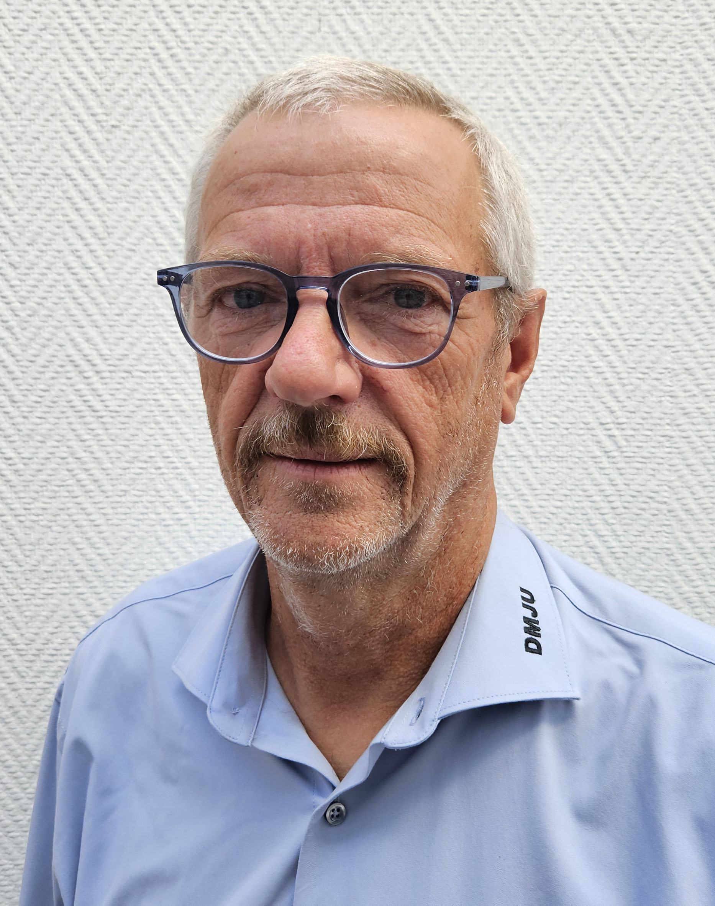
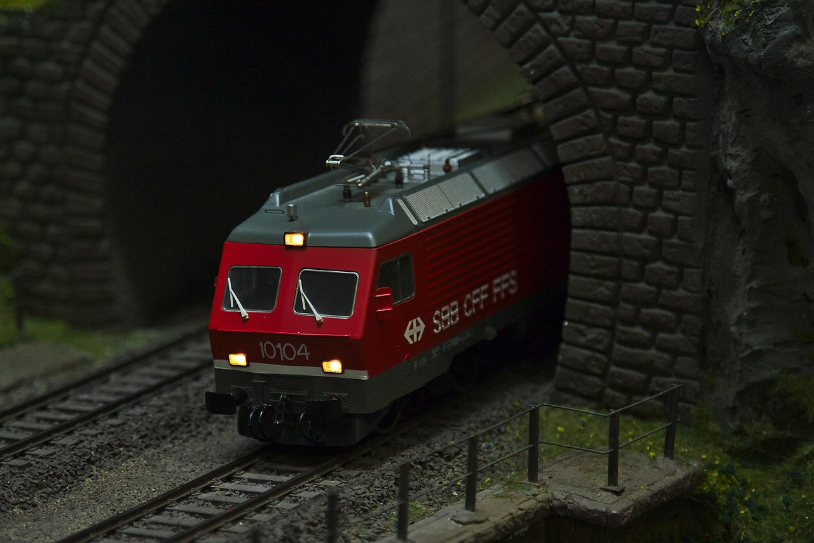
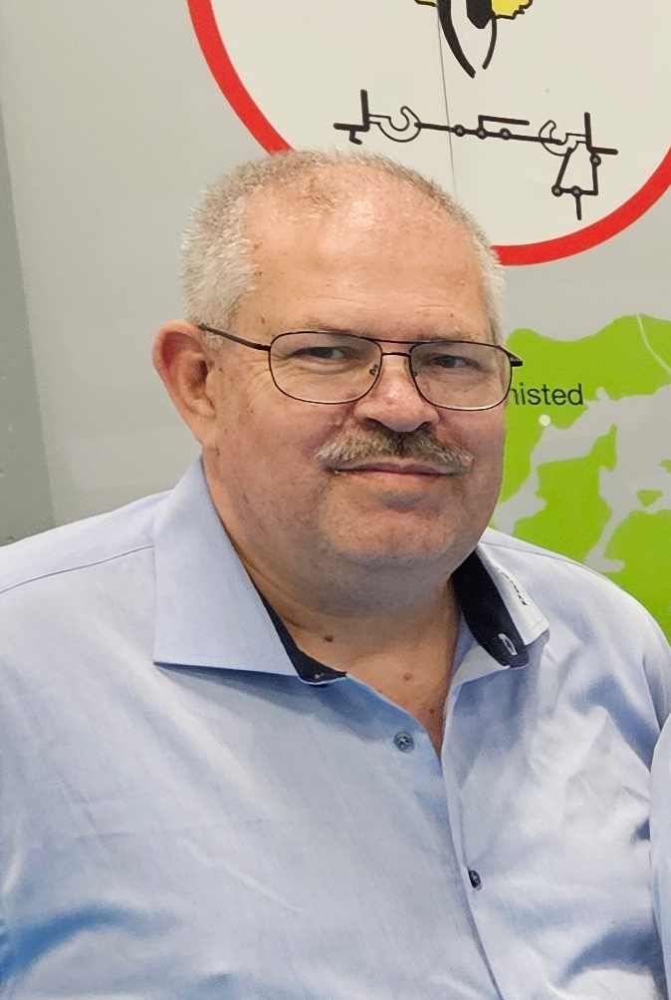
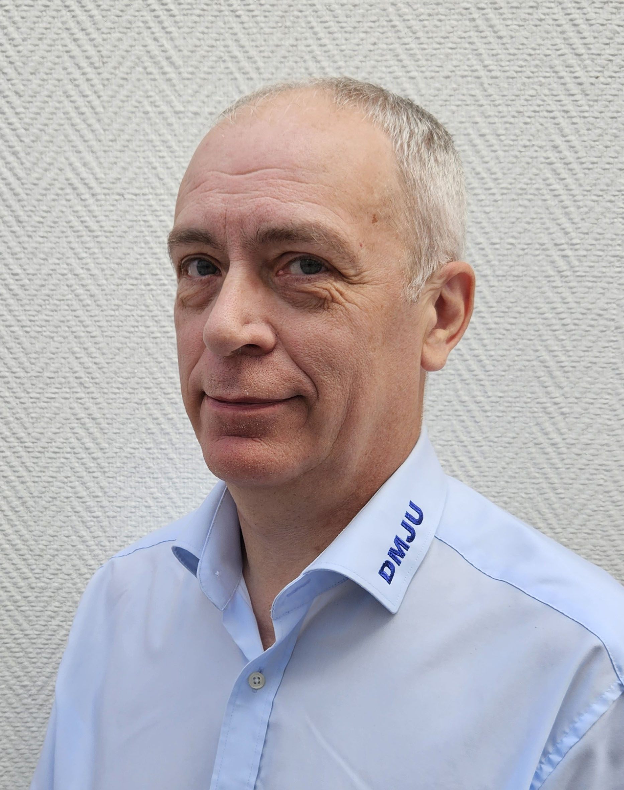
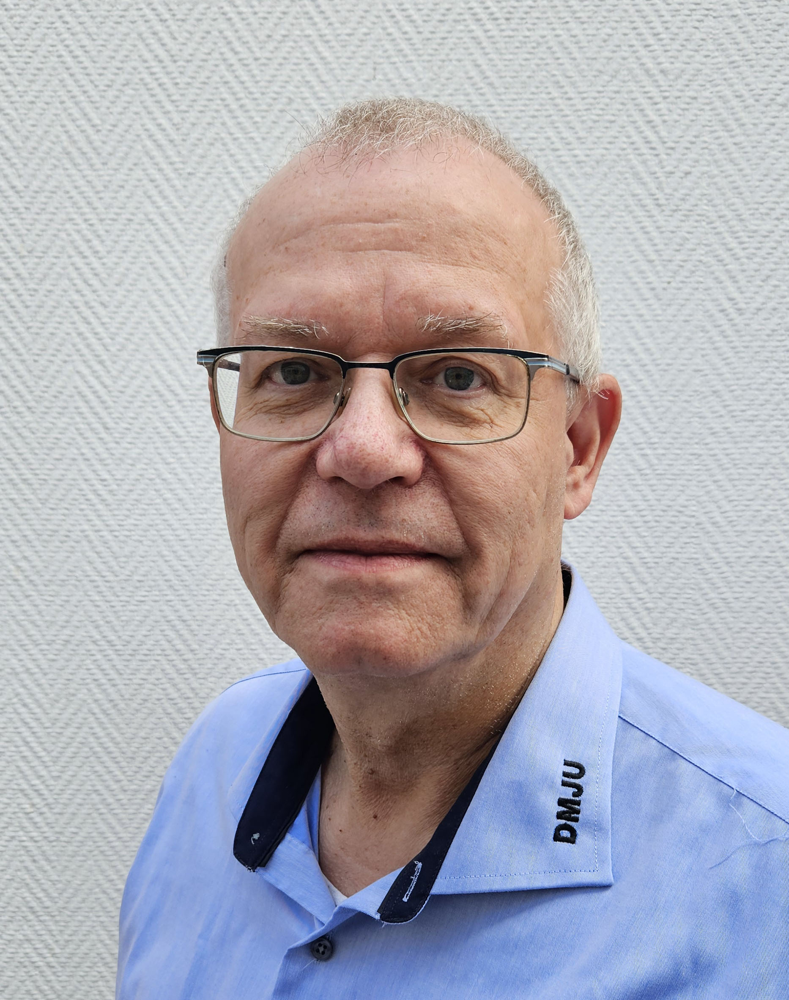
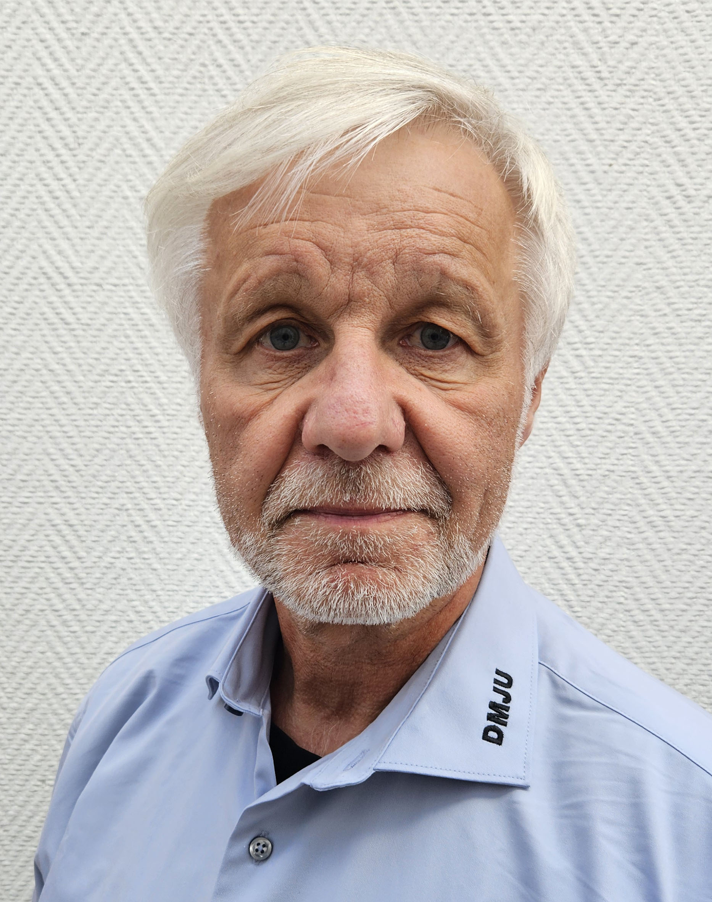
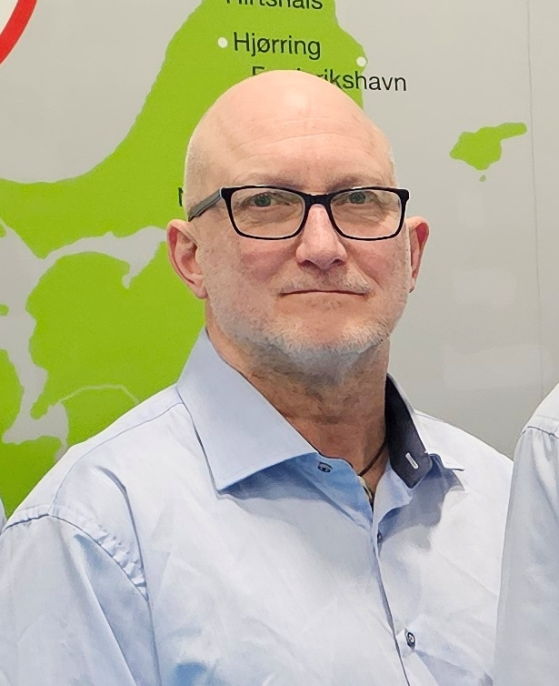

Dansk Model Jernbane Union
Bedre kendt som bare DMJU
Den 09. april 1961 blev Dansk Model Jernbane Union i dagligt tale kaldt DMJU, stiftet på en generalforsamling med det formål er at fremme samarbejdet mellem alle danske modeljernbaneklubber og at fremme interessen for modeljernbane hobbyen generelt.
DMJU har siden vokset sig til i dag at repræsentere 105 klubber fordelt på alle størrelser og drift type og som samt hvert år afholder Danmarks største modeltogs udstilling.

Et tilbageblik om stiftelsen af DMJU og MOROP
Poul Erik Clausen, der var næstformand i DMJK, fremsatte i 1950 på DMJKs generalforsamling, sammen med Poul Erik Harby, nogle ret vidtrækkende forslag hvoraf det ene gik ud på, at DMJK skulle søge kontakt med landets andre MJ klubber med henblik på dannelse af en fælles Union. Dette forslag kom ikke til realitets drøftelse på generalforsamlingen som følge af en heftig debat om andre emner, men Clausen opgav ingen lunde tanken om et nærmere samarbejde mellem klubberne.
Bestyrelsen




